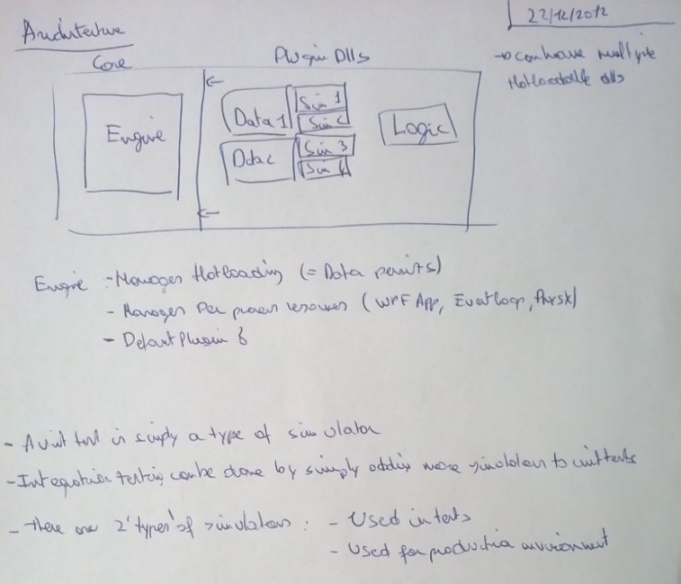

Contains The Wizards Engine IDE implementation. Should be moved to a seperate hotloadable gameplay dll.
NUnit Tests can be run integrated into the engine by adding a EngineTestAttribute to the class. You should create an engine in the unit tests by using the EngineFactory.
The goal workflow is:
- Start NewModules.exe. This is The Wizards Engine IDE. Keep this running at all times. (to be renamed)
- Open the solution for the hotloadable module you want to edit. There can be multiple modules for different gameplay features and they can have dependencies to eachother.
- Make changes in visual studio, then build. The engine will reload your code. Modules which are not reloaded keep their data in the system.
Missing engine features:
- Loopback of engine data back into the source code (test setups, lvls, etc)
- Hotload everything. What is hotloading exactly?
- Store state on engine shutdown and load
- Simulator ordering ==> Add simulator groups (rendering, simulation, physx, loading, ...)
- Dont create new console on hotloading!!
